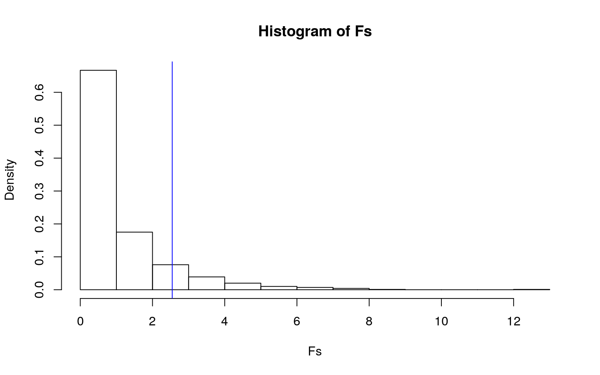
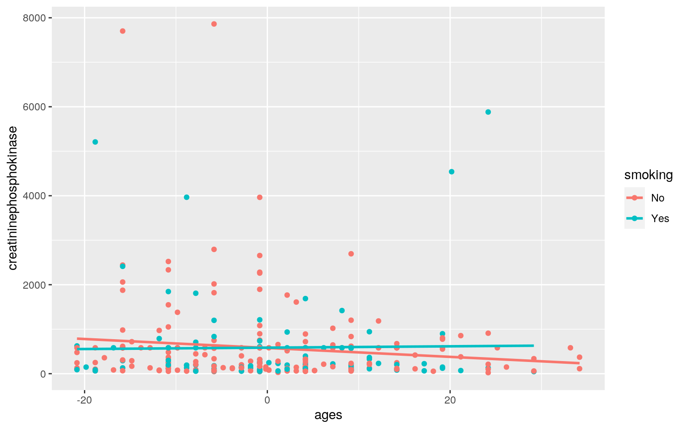
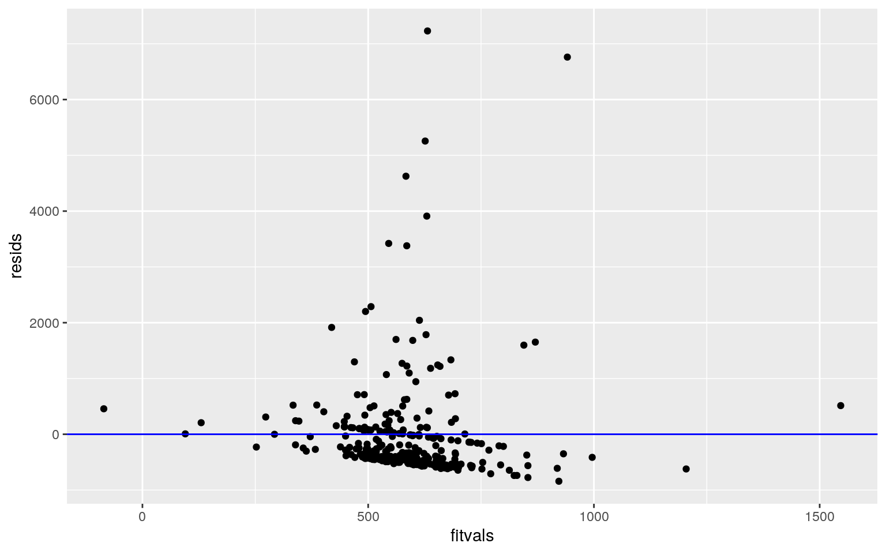
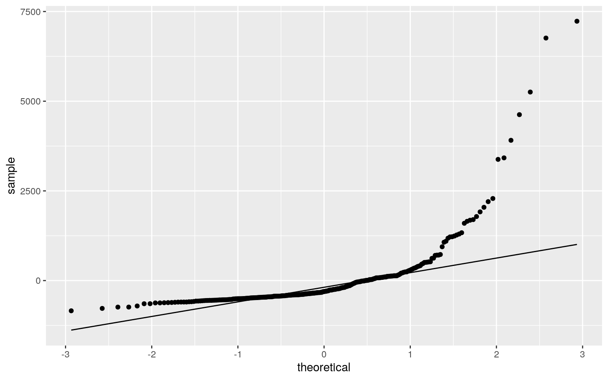
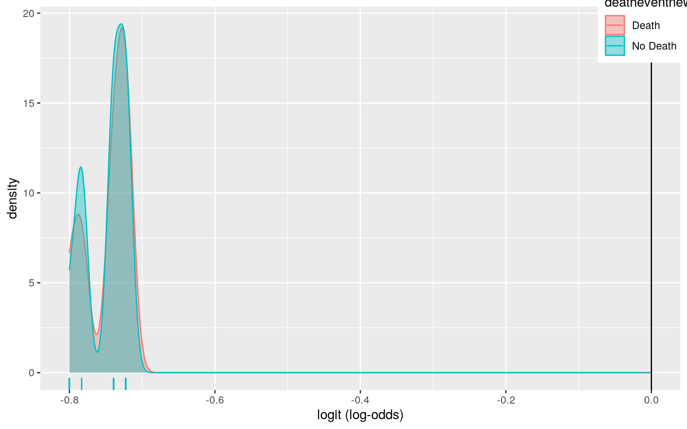
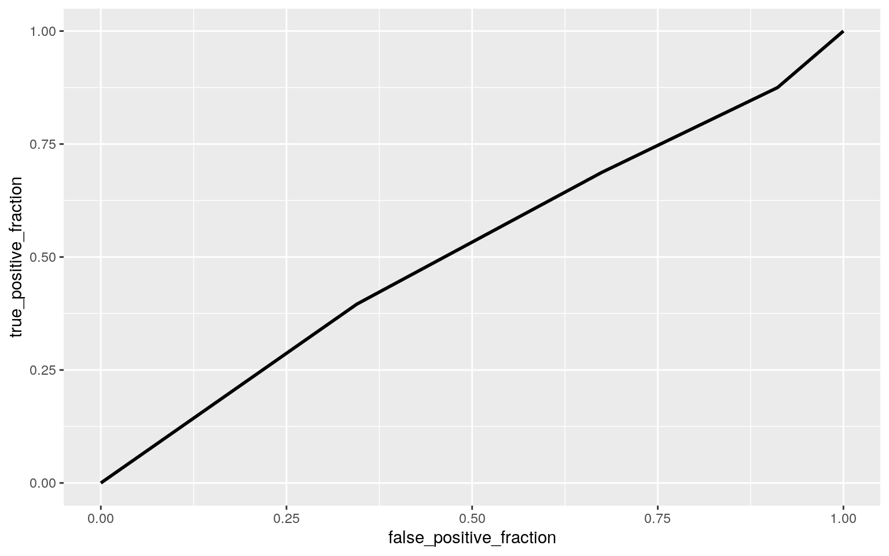

This project will explore the incidence of death due to heart failure and potential associations with risk factors, such as serum creatinine and serum sodium levels. This dataset was acquired from kaggle.com and contains 299 observations. The dataset contains various clinically assessed risk factors, such as smoker status and diabetic status. This data exploration is of interest to me, personally, because many members of my family suffer from cardiovascular disease. Hopefully, this project will allow me to gain better insight into the predictors of heart failure and potentially lead to lifestyle changes for myself and my family. Before beginning analysis, minor changes were made to the original dataset in order to make analysis run more smoothly. The initial dataset did not have a patient ID variable. This was inputted manually in Excel before uploading the dataset into R. There were two variables in this dataset that are not of interest to my project due to their lack of clear definition. Finally, some categorical variables in this dataset, such as diabetic and smoker status, were coded as "Yes"=1 and "No"=0.
library(dplyr)
library(tidyverse)
library(survival)
library(sandwich)
library(lmtest)
library(ggplot2)
library(glmnet)
library(vegan)
hearts <- read.csv(file = 'heart_failure_clinical_records_dataset.csv')
hearts <- hearts %>% rename_all(function(x)str_replace(x,"_","")) %>% rename_all(function(x)str_replace(x,"_",""))
hearts <- hearts[-c(11,13)]
hearts <- hearts %>% mutate_at(c("diabetes","smoking"),function(x)ifelse(x==0, "No","Yes"))
head(hearts)## ID age anaemia creatininephosphokinase diabetes
ejectionfraction highbloodpressure platelets
## 1 1 75 0 582 No 20 1 265000
## 2 2 55 0 7861 No 38 0 263358
## 3 3 65 0 146 No 20 0 162000
## 4 4 50 1 111 No 20 0 210000
## 5 5 65 1 160 Yes 20 0 327000
## 6 6 90 1 47 No 40 1 204000
## serumcreatinine serumsodium smoking DEATHEVENT
## 1 1.9 130 No 1
## 2 1.1 136 No 1
## 3 1.3 129 Yes 1
## 4 1.9 137 No 1
## 5 2.7 116 No 1
## 6 2.1 132 Yes 1man1 <- manova(cbind(platelets, serumcreatinine, serumsodium) ~ diabetes, data = hearts)
summary(man1)## Df Pillai approx F num Df den Df Pr(>F)
## diabetes 1 0.021478 2.1583 3 295 0.09305 .
## Residuals 297
## ---
## Signif. codes: 0 '***' 0.001 '**' 0.01 '*' 0.05 '.' 0.1
' ' 1summary.aov(man1)## Response platelets :
## Df Sum Sq Mean Sq F value Pr(>F)
## diabetes 1 2.4228e+10 2.4228e+10 2.546 0.1116
## Residuals 297 2.8263e+12 9.5163e+09
##
## Response serumcreatinine :
## Df Sum Sq Mean Sq F value Pr(>F)
## diabetes 1 0.70 0.70376 0.6568 0.4183
## Residuals 297 318.22 1.07144
##
## Response serumsodium :
## Df Sum Sq Mean Sq F value Pr(>F)
## diabetes 1 46.5 46.528 2.401 0.1223
## Residuals 297 5755.5 19.379library(rstatix)
diabetic <- hearts$diabetes
resp <- hearts %>% select(platelets, serumcreatinine, serumsodium)
sapply(split(resp,diabetic), mshapiro_test)## No Yes
## statistic 0.6057511 0.609529
## p.value 8.403361e-20 1.019495e-16#If any p<.05, stop (assumption violated). For my data, I ran a MANOVA test on the variables of platelet count, serum creatinine levels, and serum sodium levels against a patient's diabetes status. The null hypothesis is that the means of all groups are equal for each response variable. The MANOVA test reveals that we fail to reject the null hypothesis (p=0.09305, F= 2.1583). For an ANOVA test, there is no significant difference between the response variables based on diabetic status (platelet.p=0.1116, serumcreatinine.p=0.4183, serumsodium.p=0.1223). Because there is no significance, I did not run t tests on my response variables. I ran 1 MANOVA and 3 ANOVA tests. I would have ran 3 t tests. The assumptions for a MANOVA test are random samples, independent observations, multivariate normality of DVs, homogeneity of within-group covariance matrices, linear relationships among DVs, no extreme univariate or multivariate outliers, and no multicollinearity. These assumptions are violated in my dataset nased on the mshapiro test (p=8.403361e-20, 1.019495e-16).
library(vegan)
dists <- hearts %>% select(platelets, serumcreatinine, serumsodium) %>% dist()
adonis(dists~diabetes, data=hearts)##
## Call:
## adonis(formula = dists ~ diabetes, data = hearts)
##
## Permutation: free
## Number of permutations: 999
##
## Terms added sequentially (first to last)
##
## Df SumsOfSqs MeanSqs F.Model R2 Pr(>F)
## diabetes 1 2.4228e+10 2.4228e+10 2.546 0.0085 0.121
## Residuals 297 2.8263e+12 9.5163e+09 0.9915
## Total 298 2.8506e+12 1.0000table(hearts$diabetes)##
## No Yes
## 174 125SST<- sum(dists^2)/299
SSW<-hearts%>%group_by(diabetes)%>%select(diabetes, platelets, serumcreatinine, serumsodium)%>%
do(d=dist(.[-1],"euclidean"))%>%ungroup()%>% summarize(sum(d[[1]]^2)/174 + sum(d[[2]]^2)/125) %>%pull
F_obs<-((SST-SSW)/1)/(SSW/297)
Fs<-replicate(1000,{
new<-hearts%>%mutate(diabetes=sample(diabetes))
SSW<-new%>%group_by(diabetes)%>%select(diabetes, platelets, serumcreatinine, serumsodium)%>%
do(d=dist(.[-1],"euclidean"))%>%ungroup()%>%
summarize(sum(d[[1]]^2)/174 + sum(d[[2]]^2)/125)%>%pull
((SST-SSW)/1)/(SSW/297)
})
{hist(Fs,prob = T); abline(v=F_obs, col="blue", add=T)} The variables I examined were patient platelet count, serum sodium, and serum creatinine levels. The null hypothesis states that for platelet count, serum sodium and creatinine levels, the mean for diabetic status should be equal. The alternative hypothesis is that there will be a significant difference for at least one variable. The PERMANOVA p value is 0.131, indicating that we fail to reject the null hypothesis.
set.seed(123)
data(hearts)
hearts$ages<- hearts$age - mean(hearts$age)
hearts$plateletss <- hearts$platelets - mean(hearts$platelets)
fita <- lm(creatininephosphokinase ~ ages * plateletss * smoking, data = hearts)
summary(fita)##
## Call:
## lm(formula = creatininephosphokinase ~ ages * plateletss
* smoking,
## data = hearts)
##
## Residuals:
## Min 1Q Median 3Q Max
## -842.4 -460.8 -306.0 88.1 7229.6
##
## Coefficients:
## Estimate Std. Error t value Pr(>|t|)
## (Intercept) 5.778e+02 6.824e+01 8.468 1.25e-15 ***
## ages -9.188e+00 5.651e+00 -1.626 0.105
## plateletss 6.155e-04 7.412e-04 0.830 0.407
## smokingYes 8.620e+00 1.208e+02 0.071 0.943
## ages:plateletss -6.976e-05 5.444e-05 -1.282 0.201
## ages:smokingYes 1.024e+01 1.050e+01 0.975 0.330
## plateletss:smokingYes -1.182e-03 1.200e-03 -0.986 0.325
## ages:plateletss:smokingYes 6.382e-05 9.227e-05 0.692
0.490
## ---
## Signif. codes: 0 '***' 0.001 '**' 0.01 '*' 0.05 '.' 0.1
' ' 1
##
## Residual standard error: 971.6 on 291 degrees of freedom
## Multiple R-squared: 0.02077, Adjusted R-squared:
-0.002788
## F-statistic: 0.8816 on 7 and 291 DF, p-value: 0.5213hearts %>% ggplot(aes(x=ages, y=creatininephosphokinase, color=smoking)) + geom_point() + geom_smooth(method = "lm", se=F)
resids <- fita$residuals
fitvals <- fita$fitted.values
ggplot() + geom_point(aes(fitvals, resids)) + geom_hline(yintercept = 0, color = "blue")
ggplot() + geom_qq(aes(sample = resids)) + geom_qq_line(aes(sample = resids))
coeftest(fita, vcov = vcovHC(fita))##
## t test of coefficients:
##
## Estimate Std. Error t value Pr(>|t|)
## (Intercept) 5.7783e+02 6.6196e+01 8.7291 < 2e-16 ***
## ages -9.1884e+00 4.4905e+00 -2.0462 0.04163 *
## plateletss 6.1546e-04 6.6108e-04 0.9310 0.35263
## smokingYes 8.6198e+00 1.2622e+02 0.0683 0.94560
## ages:plateletss -6.9764e-05 4.6455e-05 -1.5018 0.13425
## ages:smokingYes 1.0238e+01 1.6916e+01 0.6052 0.54550
## plateletss:smokingYes -1.1823e-03 8.0850e-04 -1.4624
0.14472
## ages:plateletss:smokingYes 6.3817e-05 6.9443e-05 0.9190
0.35887
## ---
## Signif. codes: 0 '***' 0.001 '**' 0.01 '*' 0.05 '.' 0.1
' ' 1I decided to run my linear regression to determine whether the age, smoker status, and platelet count of a patient predicted the creatinine phosphokinase levels. I did not find any significant predictors of creatinine phosphokinase. However, I yield different results once I recompute regression results with robust standard errors. In this case, age is a significant predictor of creatinine phosphokinase levels. For every 1 increase in age, creatinine phosphokinase levels decrease by 9.19. The proportion of the variation in the outcome that my model explains is 0.02077. This reveals that my model is not a good predictor of creatinine phosphokinase levels in these heart disease patients.
samp <- replicate(5000, {
boots <- sample_frac(hearts, replace = T)
fita <- lm(creatininephosphokinase ~ ages * plateletss * smoking, data = boots)
coef(fita)
})
samp %>% t %>% as.data.frame %>% summarize_all(sd)## (Intercept) ages plateletss smokingYes ages:plateletss
ages:smokingYes plateletss:smokingYes
## 1 64.39851 4.47989 0.0006817487 122.6117 5.156132e-05
16.3013 0.0009497691
## ages:plateletss:smokingYes
## 1 9.092452e-05When comparing the bootstrapped SEs to the original model, the bootstrapped SEs are smaller except for the interaction between age and yes-smoker status. When comparing the bootstrapped SEs to the adjusted model, the bootstrapped SEs are larger with the exception of age and yes-smoker status.
fitb <- glm(DEATHEVENT ~ diabetes + smoking, data = hearts, family = "binomial")
summary(fitb)##
## Call:
## glm(formula = DEATHEVENT ~ diabetes + smoking, family =
"binomial",
## data = hearts)
##
## Deviance Residuals:
## Min 1Q Median 3Q Max
## -0.8897 -0.8835 -0.8676 1.4955 1.5305
##
## Coefficients:
## Estimate Std. Error z value Pr(>|z|)
## (Intercept) -0.72244 0.19101 -3.782 0.000155 ***
## diabetesYes -0.01687 0.25395 -0.066 0.947038
## smokingYes -0.06075 0.26925 -0.226 0.821480
## ---
## Signif. codes: 0 '***' 0.001 '**' 0.01 '*' 0.05 '.' 0.1
' ' 1
##
## (Dispersion parameter for binomial family taken to be 1)
##
## Null deviance: 375.35 on 298 degrees of freedom
## Residual deviance: 375.30 on 296 degrees of freedom
## AIC: 381.3
##
## Number of Fisher Scoring iterations: 4probs <- predict(fitb, type = "response")
table(predict = as.numeric(probs > 0.5), truth = hearts$DEATHEVENT) %>% addmargins## truth
## predict 0 1 Sum
## 0 203 96 299
## Sum 203 96 299class_diag<-function(probs,truth){
tab<-table(factor(probs>.5,levels=c("FALSE","TRUE")),truth)
acc=sum(diag(tab))/sum(tab)
sens=tab[2,2]/colSums(tab)[2]
spec=tab[1,1]/colSums(tab)[1]
ppv=tab[2,2]/rowSums(tab)[2]
f1=2*(sens*ppv)/(sens+ppv)
if(is.numeric(truth)==FALSE & is.logical(truth)==FALSE){
truth<-as.numeric(truth)-1}
#CALCULATE EXACT AUC
ord<-order(probs, decreasing=TRUE)
probs <- probs[ord]; truth <- truth[ord]
TPR=cumsum(truth)/max(1,sum(truth))
FPR=cumsum(!truth)/max(1,sum(!truth))
dup<-c(probs[-1]>=probs[-length(probs)], FALSE)
TPR<-c(0,TPR[!dup],1); FPR<-c(0,FPR[!dup],1)
n <- length(TPR)
auc<- sum( ((TPR[-1]+TPR[-n])/2) * (FPR[-1]-FPR[-n]) )
data.frame(acc,sens,spec,ppv,f1,auc)
}
class_diag(probs, hearts$DEATHEVENT)## acc sens spec ppv f1 auc
## 1 0.6789298 0 1 NaN NaN 0.514881hearts$logit<-predict(fitb,type="link")
hearts <- hearts %>% mutate(deatheventnew = case_when(DEATHEVENT==0 ~ "No Death", DEATHEVENT==1 ~ "Death"))
hearts%>%ggplot()+geom_density(aes(logit,color= deatheventnew,fill= deatheventnew), alpha=.4)+
theme(legend.position=c(.95,.95))+geom_vline(xintercept=0)+xlab("logit (log-odds)")+
geom_rug(aes(logit,color= deatheventnew))
library(plotROC)
ROCplot <- ggplot(hearts) + geom_roc(aes(d = DEATHEVENT, m = probs),n.cuts = 0)
ROCplot
calc_auc(ROCplot)## PANEL group AUC
## 1 1 -1 0.514881For this model, I wanted to determine if diabetes or smoking led to a death event in a patient. While controlling for diabetes or for smoker status, neither significantly changed the log odds of a death event in a patient. For this model, the accuracy is 0.6789298, the sensitivity is 0, and the specificity is 1. The AUC is 0.514881, which we can tell is not a good predictor. The calculated AUC and the AUC value from the ROC plot are similar The ROC plot curve does not indicate that this model is good.
heartie <- hearts[-13:-16 ]
fitss <- glm(DEATHEVENT ~., data= heartie, family = "binomial")
summary(fitss)##
## Call:
## glm(formula = DEATHEVENT ~ ., family = "binomial", data
= heartie)
##
## Deviance Residuals:
## Min 1Q Median 3Q Max
## -2.2710 -0.5625 -0.2301 0.4044 2.6947
##
## Coefficients:
## Estimate Std. Error z value Pr(>|z|)
## (Intercept) 9.344e+00 5.548e+00 1.684 0.092113 .
## ID -1.890e-02 2.635e-03 -7.171 7.46e-13 ***
## age 4.562e-02 1.572e-02 2.901 0.003719 **
## anaemia 3.664e-02 3.587e-01 0.102 0.918638
## creatininephosphokinase 2.051e-04 1.845e-04 1.112
0.266200
## diabetesYes 1.577e-01 3.531e-01 0.447 0.655179
## ejectionfraction -7.315e-02 1.610e-02 -4.545 5.50e-06
***
## highbloodpressure -5.336e-02 3.576e-01 -0.149 0.881369
## platelets -9.520e-07 1.871e-06 -0.509 0.610927
## serumcreatinine 6.693e-01 1.812e-01 3.693 0.000222 ***
## serumsodium -6.279e-02 3.921e-02 -1.601 0.109294
## smokingYes -2.652e-01 3.798e-01 -0.698 0.485010
## ---
## Signif. codes: 0 '***' 0.001 '**' 0.01 '*' 0.05 '.' 0.1
' ' 1
##
## (Dispersion parameter for binomial family taken to be 1)
##
## Null deviance: 375.35 on 298 degrees of freedom
## Residual deviance: 218.10 on 287 degrees of freedom
## AIC: 242.1
##
## Number of Fisher Scoring iterations: 6probsss <- predict(fitss, type = "response")
table(predict = as.numeric(probsss > 0.5), truth = heartie$DEATHEVENT) %>% addmargins## truth
## predict 0 1 Sum
## 0 185 30 215
## 1 18 66 84
## Sum 203 96 299class_diag(probsss, heartie$DEATHEVENT)## acc sens spec ppv f1 auc
## 1 0.8394649 0.6875 0.91133 0.7857143 0.7333333 0.9012726set.seed(1234)
k = 10
data <- heartie[sample(nrow(heartie)), ]
folds <- cut(seq(1:nrow(heartie)), breaks = k, labels = F)
diags <- NULL
for (i in 1:k) {
train <- data[folds != i, ]
test <- data[folds == i, ]
truth <- test$DEATHEVENT
fitc <- glm(DEATHEVENT ~ ., data = train, family = "binomial")
probss <- predict(fitc, newdata = test, type = "response")
diags <- rbind(diags, class_diag(probss, truth))
}
summarize_all(diags, mean)## acc sens spec ppv f1 auc
## 1 0.8128736 0.6694517 0.880392 0.7332723 0.6926747
0.8861487x <- -model.matrix(fitss)
y <- as.matrix(heartie$DEATHEVENT)
cv <- cv.glmnet(x, y, family = "binomial")
lasso1 <- glmnet(x, y, , family = "binomial", lambda = cv$lambda.1se)
coef(lasso1)## 13 x 1 sparse Matrix of class "dgCMatrix"
## s0
## (Intercept) 1.390763750
## (Intercept) .
## ID 0.012202431
## age -0.011700040
## anaemia .
## creatininephosphokinase .
## diabetesYes .
## ejectionfraction 0.031660006
## highbloodpressure .
## platelets .
## serumcreatinine -0.301421578
## serumsodium 0.003359283
## smokingYes .set.seed(1234)
k = 10
datasss <- heartie[sample(nrow(heartie)), ]
folds <- cut(seq(1:nrow(heartie)), breaks = k, labels = F)
diags <- NULL
for (i in 1:k) {
train <- datasss[folds != i, ]
test <- datasss[folds == i, ]
truth <- test$DEATHEVENT
fitd <- glm(DEATHEVENT ~ age + ejectionfraction + serumcreatinine + serumsodium, data = train, family = "binomial")
probstwo <- predict(fitd, newdata = test, type = "response")
diags <- rbind(diags, class_diag(probstwo, truth))
}
summarize_all(diags, mean)## acc sens spec ppv f1 auc
## 1 0.7558621 0.4425794 0.9076756 0.6992308 0.5213119
0.7792773The first logistic regression compares the binary variable DEATHEVENT to all variables in the dataset. The in-sample classification diagnostics for the logistic regression show that the accuracy is 0.8394649, the sensitivty is 0.6875, the specificity is 0.91133, the precision is 0.7857143, and the AUC is 0.9012726. This AUC value shows that the model is good. Next, a 10-fold CV was ran on this model and the accuracy is 0.8128736, the sensitivty is 0.6694517, the specificity is 0.880392, the precision is 0.7332723, and the AUC is 0.8861487.The new AUC value still shows that the model is good. The in-sample classification diagnostics are generally larger than the 10-fold diagnostics. Next, a LASSO was performed on the in-sample model and the variables of age, ejection fraction, serum creatinine, and serum sodium were retained. A 10-fold CV was ran on a model with only the variables that the LASSO selected. This model showed that the accuracy is 0.7558621, the sensitivty is 0.4425794, the specificity is 0.9076756, the precision is 0.6992308, and the AUC is 0.7792773. The AUC for this model is not as good as the previous two models and is the smallest value. The best AUC value is from the in-sample model(0.9012726). The second best is from the first 10-fold CV model (0.8861487).
...